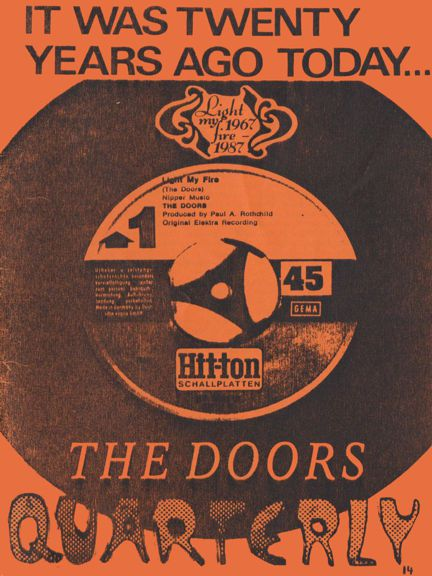

Depending on your computer's safety settings (antivirus, firewall, etc.) the download may generate a standard warning, that is because the magazine is a flipbook in the .EXE file format. We guarantee that the file is absolutely harmless and perfectly safe. |
A new window will open with the magazine for you to read online without the need to download it onto your computer. Again, we guarantee that it's absolutely harmless and perfectly safe. |
|||
|  | Another step back into the past
with The Doors Quarterly Magazine #14, which got
published on June 26, 1987 ... about 33 years ago. I haven't had a look at this one for ages, so let's check issue #14 of The Doors Quarterly Magazine right here and right now. Anyway, it was the last DQ that got xeroxed only. I must admit, in June 1987 I was more or less listening to The Beatles' "Sgt. Pepper" only (as I was in 2017 with the fine "Sgt. Pepper 50th Anniversary Box"). That's why I decided to put a big 'It was 20 years ago today' at the top of the cover page, along with a Xerox of the "Light My Fire" Hit-Ton single label, the way the song got first released in Germany. For producing this DQ 14 I had no computer or Internet (had it even been invented yet at the time?) - everything was typed on my old and heavy electric typewriter and the bigger letters for headings used to be pretty expensive rub-off letters on small plastic sheets or plastic lettering tapes. Let's check the content: In the intro I was writing about an original matrix number of a Doors bootleg called "Jim Morrison: The Lizard King" (LIZ 1968) ... fearing this collectors item might be stolen one day - and it was. I (unfortunately) only discovered the loss about 10 years later and still have no idea who might have stolen it. Too bad - just this one and only copy of the matrix exists. Read Danny Sugerman's defending of The Doors' existing and forthcoming compilation LPs on page 4; I find his letter pretty interesting. Has anybody ever made a list of ALL compilation LPs and CDs that have been released by the group? On Page 5 and 6 there's a very personal review of myself about how I became a fan of The Doors. Christian Stede (deceased in 2015; in his obituary his family added a Morrison quote, 'Death makes angels of us all ...') added a fine meditation on Jim Morrison's Intensity; Thomas Collmer adds a review of a reading: "An American Prayer" done by Volker Langwagen (a German actor). If only we all had ordered David Sygall's original Jim Morrison photo prints for $2 each (check page 12) ... in 2020 each of them cost much much more. Bootlegging The Doors follows and sheds some light on different pressings of illegal Doors LPs. I still owe a big thanks to our friend Goeran Nystroem from Sweden, who published his travel report on Venice Beach in this DQ; note his annotations of the Big Blue Bus. The usual fan letters are next, plus my review of the disappointing "Hollywood Bowl" EP. The Doors talk about some casual stories in part two of a 1978 interview by Antoine Légat from Belgium. No poster was added to this DQ but fans found a golden bumper sticker in the envelope. Enjoy this digital issue and let us know what you think ... we will continue soon by publishing a digital version of DQ 13. CU and have fun! Thanks to Kevin Chiotis for all of his work! A splendid time is guaranteed for all! And dont forget: Please note that your digital copy of The Doors Quarterly Magazine 14 hasn't been altered in any way. You get it as it was published in June 1987 (!). Be aware that all addresses (private, phone including my own on page 2) are certainly no longer valid anymore. Books, vinyl records, CDs and other stuff might not be available any longer. Please do not respond to any of the small ads or blame anyone for incorrect details or typos - all writers just did the best they could in the early Summer days of 1987. And all this happened without any computer, without any emails and of course without the internet. PS: ... if you would like to obtain an original paper copy of the Doors Quarterly Magazine 14 I have to tell you that unfortunately there are no copies left at all! Thank you! Rainer Moddemann. |
|||